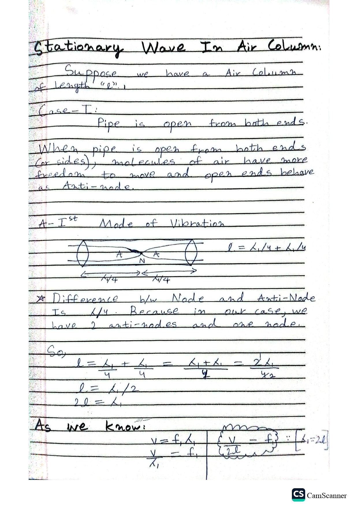

Stationary Wave In Air Column
Open Pipe · 1st Mode of Vibration · Case-I
Setup
Suppose we have a Air Column of length
"l".
Case-I:
Pipe is open from both ends.
When pipe is open from both ends (or sides), molecules of air have
more freedom to move and open ends behave as
Anti-node.
A — 1st Mode of Vibration
l = λ₁/4 + λ₁/4
★ Board note: Difference
b/w Node and Anti-Node is λ/4. Because in our case, we have 2
anti-nodes and one node.
So,
l = λ₁/4 + λ₁/4 = (λ₁ + λ₁)/4 = 2λ₁/4
l = λ₁/2
2l = λ₁
As we know:
v = f₁ λ₁
v / λ₁ = f₁
{ v / 2l = f₁ } ∵ [λ₁ = 2l]
Original Notebook Page

Add ch7_p11.jpg next to this file